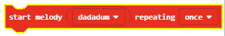
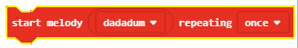

Задача-Алармата¶
Алармите са устройства, които комуникират с централна контролна единица чрез електронна система и изпращат сигнали за възможните движения и промени, засечени от сензорите.
Типична домашна алармена система съдържа следните компоненти:
Конролен панел-централната контролна единица на алармената система
Сензори на вратите, прозорците или други мебели
Вътрешни/външни сензори за движение
Много силна сирена
Принципът е много прост: алармената система охранява пространства, през които може да се влезне в къщата, апартамента, офиса, чрез своите сензори, комуникиращи с централното табло. Сензорите обикновено се намират на врати, прозорци или двуги отвори.
Домашната аларма трябва да засича движение, температура или светлинен интензитет в дадена стая. Ако вратата се отвори, температурата или интензитета се повишат, устройството ще издаде звук.
За направата на подобна аларма ще ни трябват:
3 Micro:bit-а
Тиксо
Тонколони или слушалки
Крокодилски щипки
За създаването на домашната аларма, първо ще трябва да направим физическото устройство, състоящо се от Micro:bit, който ще служи като сензор за движение, друг Micro:bit, който ще засича температурните и светлинните промени, и трети Micro:bit, който ще издава звук при установени промени (този Micro:bit трябва да се намира на 10 м от сензора).
След като сме направили устройството, е ред на програмите за всеки отделен Micro:bit.
Ще програмираме всеки Micro:bit поотделно:
1. Първо ще програмираме Micro:bit-а, който ще служи като датчик за движение. 2. Вторият ще засича промени в температурата и светлината. 3. Третият произвежда звук ако първите два са задействани.
Стъпка 1
Отидете на https://makecode.microbit.org/.
Първо ще програмираме Micro:bit-а, който ще служи като датчик за движение.
Step 2
Създавайте нов проект.
Искаме устройството да засича движение, но и да комуникира с останалите Micro:bit-ове, поради което те трябва да принадлежат към една и съща ID група.
Стъпка 3
За да създадем ID група, трябва да влачим блока  от категория в блока
от категория в блока  от категория
от категория  . В полето
. В полето  ще въведем желаното число за ID групата. Това може да е всяко число. Ние ще оставим числото 1. Така ще сме създали група с ID 1, в която всички Micro:bit-а ще общуват.
ще въведем желаното число за ID групата. Това може да е всяко число. Ние ще оставим числото 1. Така ще сме създали група с ID 1, в която всички Micro:bit-а ще общуват.
Частта от кода, която създава групата за комуникация:

Стъпка 4
Завлечете блока  от категория
от категория  в блока
в блока  , намиращ се в категория .
, намиращ се в категория .
В условното поле  завлечете блока
завлечете блока  (от категорията ).
(от категорията ).
От падащото меню на блока :

Изберете опцията  . Чрез нея устройството ще засича движение.
. Чрез нея устройството ще засича движение.

Според задачата, когато движение бъде регистрирано (изпълнение на условие), Micro:bit –ът ще изпрати конкретна стойност чрез блока  .
.
Ще въведем числото 5 в полето  (може да бъде въведена всяка стойност). За да реагира сензорът, т.е. да засече движение, трябва да го настроим на определен период от време-нека бъде 3 секунди (3 000 милисекунди). За тази цел ще използваме блока
(може да бъде въведена всяка стойност). За да реагира сензорът, т.е. да засече движение, трябва да го настроим на определен период от време-нека бъде 3 секунди (3 000 милисекунди). За тази цел ще използваме блока  от категория . Във
от категория . Във  ще поставим 3000ms, което ще бъде времето за реакция на сензора, с оглед на появилата се промяна.
ще поставим 3000ms, което ще бъде времето за реакция на сензора, с оглед на появилата се промяна.

Стъпка 5
Свалете .hex файла на своя компютър, натискайки бутона или  . Micro:bit-ът ще бъде готов да започне своята работа, когато завлечете файла в него.
. Micro:bit-ът ще бъде готов да започне своята работа, когато завлечете файла в него.
Стъпка 6
Сега ще програмираме втория Micro:bit да засича разликата в температурата и светлинния интензитет, а също и да изпраща тази информация на Micro:bit-а, който ще реагира чрез звук. Micro:bit. За да комуникират Micro:bit-овете, те трябва да са от една и съща ID група.
Вече създадохме такава, именувана с числото 1, в която всички Micro:bit-ове ще комуникират:
Завлечете блока от категория в блока . Също така ни трябват блоковете, които определят условията в условното поле . Едно от условията ще е температурата да е по-висока от 30 градуса, а светлинното ниво да е по-високо от 150.
Условията могат да бъдат сложни (създадени чрез прости условия).
В нашия случай, простите условия са температурното и светлинното ограничение, които поставихме.
Определяме простите си условия с блока  .
.
В нашия случай :
температура
 по-висока от 30:
по-висока от 30:  .
.светлинен интензитет
 по-висок от 150:
по-висок от 150:  .
.
Използваме логически оператори (boolean) за връзка межди прости условия (AND, OR, NOT).
В MakeCode логически оператори са представени по следния начин:
 - свързва две условия и връща отговор True като резултат само ако и двете условия са верни.
- свързва две условия и връща отговор True като резултат само ако и двете условия са верни.
 - свързва две условия и връща като отговор True ако дори едно от условията е вярно.
- свързва две условия и връща като отговор True ако дори едно от условията е вярно.
- поставя се пред условие и отговаря с True ако условието не е изпълнено.
Условието, което проверява дали има промяна в температурата или светлинния интензитет, се определя от този блок:

Условния блок изглежда така:

Според задачата, щом има промяна в температурата/светлината, Micro:bit-ът ще изпрати определена стойност, използвайки блока . Ще въведем числото 10 в полето (всяко число може да бъде въведено). За да реагира сензорът, т.е. да отчете промени, трябва да го настроим на определено време-3 сек. (3 000 милисек.). за тази цел ще използваме блока от категория . В полето за въведение ще въведем 3 000 милисек., което ще бъде времето за реакция на сензора, с оглед на появилата се промяна.
Програмата, засичаща промяна в светлината/температурата:

Стъпка 7
Свалете .hex файла на своя компютър, натискайки бутона или . Micro:bit-ът ще бъде готов да започне своята работа, когато завлечете файла в него.
Стъпка 8
Най-накрая, трябва да програмираме третия Micro:bit. Той ще издава силен звук при получаване на конкретна информация от другите два Micro:bit-а.
Ще създадем ID група 1:
Следващата стъпка е този Micro:bit да получава информация (число), според която ще отреагира чрез звук. Това ще стане като завлечем от категорията :
В него ще завлечем блока . В условното поле ще завлечем условието, което ще проверява числата (5, 10), получен от другите два Micro:bit-а.
използвайки знака , ще въведем повече от едно условие. В разклонението с условието  и в разклонението с условието
и в разклонението с условието  , wще завлечем блока  от чиито падащо меню ще изберем мелодията
, wще завлечем блока  от чиито падащо меню ще изберем мелодията ringtone) от категорията  , която се използва за въпроизвеждане на звук.
В допълнение към този блок, ще създадем времеви интервал от една секунда.
, която се използва за въпроизвеждане на звук.
В допълнение към този блок, ще създадем времеви интервал от една секунда.
Крайният вид на този блок:

Забележка: за възпроизводство на звука е нужно Micro:bit да бъде свързан с тонколоните/слушалките, както следва:

** Стъпка 9**
Свалете .hex файла на своя компютър, натискайки бутона или . Micro:bit-ът ще бъде готов да започне своята работа, когато завлечете файла в него.